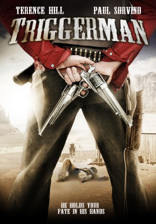

#2070 Doc West - Nobody schlägt zurück
Alternativ: Triggerman (Englischer Titel)
 
 IMDB-Wertung: 5.6 / 10
IMDB-Wertung: 5.6 / 10  Metascore: 0
Metascore: 0 
A legendary poker playing outlaw, Triggerman, arrives to town for the wildest gambling tournament this side of the west. As the tournament begins he'll get caught up in a violent showdown as bandits try to cheat their way to the finals. With his hand on the trigger this outlaw won't let anything come between him and his winning hand.
Jahr: 2009
Dauer: undefiniert Minuten
FSK: 12
Land: Italien Studio: Sunfilm EntertainmentTonspuren: DTS - ,
Untertitel:
Auflösung: 1080p (1920x1080) Größe: 9605 MB
Genre: Western
Regisseur: Giulio Base, Terence Hill
Drehbuch: Marcello Olivieri, Luca Biglione, Marco Barboni, Marcello Olivieri, Stefano Voltaggio
Soundtrack: Maurizio De Angelis
Darsteller:
 Terence Hill als Doc West
Terence Hill als Doc West Clare Carey als Denise Stark
Clare Carey als Denise Stark- Micah Alberti als Burt Baker
- Linus Huffman als Jack Baker
 Gisella Marengo als Dana
Gisella Marengo als Dana Mercedes Leggett als Gloria
Mercedes Leggett als Gloria Benjamin Petry als Silver
Benjamin Petry als Silver Mark Sivertsen als Flying Dutchman
Mark Sivertsen als Flying Dutchman Dylan Kenin als Hans
Dylan Kenin als Hans Ornella Muti als Debra 'Tricky' Downing
Ornella Muti als Debra 'Tricky' Downing Paul Sorvino als Sheriff Roy Baseheart
Paul Sorvino als Sheriff Roy Baseheart- Ryil Adamson als Telegrapher
- Crispian Belfrage als Sam Lynchett
 Maria Bethke als Villager Woman
Maria Bethke als Villager Woman- Gianni Biasetti Sr. als Larry , credit only
 Vic Browder als Smithy
Vic Browder als Smithy Christopher Hagen als Injured Cowboy
Christopher Hagen als Injured Cowboy- Christina July Kim als Xiu
 Debrianna Mansini als Elegant Woman
Debrianna Mansini als Elegant Woman David Manzanares als Cowboy #1
David Manzanares als Cowboy #1 David Midthunder als Native Leader
David Midthunder als Native Leader- James Ning als Mr. Shintai
- J. Michael Oliva als Delivery Man
- Randall Oliver als Injured Cowboy #2
- Rick A. Ortega Jr. als Manuel
- Cristen Kauffman als Half-Shaved Man
- TJ Plunkett als Boy
 Luce Rains als Drunkard #1
Luce Rains als Drunkard #1- Kevin Skousen als Holysand Postal Clerk
 Raoul Max Trujillo als Medicine Man
Raoul Max Trujillo als Medicine Man- Art Westgate als Shopkeeper
- Harry Zimmerman als Sam
 John H. Euber als Injured Cowboy , uncredited
John H. Euber als Injured Cowboy , uncredited- Maria P. Petruolo als Millie Mitchell
- Fabrizio Bucci als Johnny 'Boy' O'Leary
- Evgeniya Chernyshova als Elizabeth
- Boots Southerland als Nathan Mitchell
- Adam Taylor als Victor Baker
- Anthony Jordan Atler als Scrawny Kid
- Darrian Chavez als Estrella
- Meghan Dabrey als Shopper
- Russ Dillen als Dandy Heavy #2
- Stephen Eiland als Dandy Heavy #1
- James Espinoza als Elderly Man
- Ramon Frank als Injured Cowboy #3
- José Gallardo Jr. als Villager
- Lois Geary als Grandma Melody
- R.W. Hampton als Scar
- John Hardman als Santa Fe Postal Clerk
- Lise Hilboldt als Santa Fe Woman
Datei: X:\Person\Bud Spencer + Terence Hill\Doc West - Nobody schlägt zurück (2009, FSK12, 1920x1080).mkv seit 29.09.2015
Festplatte: HD Collection-7+mehr(A-Z)+Person
 Es gibt insgesamt 43 Filme in der Gruppe 'Person\Bud Spencer + Terence Hill'
Es gibt insgesamt 43 Filme in der Gruppe 'Person\Bud Spencer + Terence Hill'